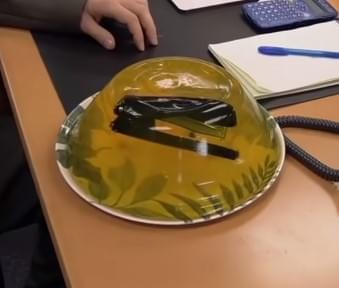

Dwight's suprise Stapler Jello
MICHAEL!!!!
Be the Jim to your Dwight with this amazing one of a kind Jello recipe!

Ingredients you'll need to recreate this iconic dish
- Dwight's Stapler
- Jell-O
- Hot water
- Cold water
Let's get to making this dish!
- Pour the powdered gelatin into a medium-sized mixing bowl.
- Add boiling water to the gelatin mix, and stir for 2 minutes until it's completely dissolved.
- Stir in the cold water.
- Carefully place the stapler in the mixture
- Refrigerate for at least 4 hours, or until the gelatin is firm and doesn't stick to your fingers when touched.
Stapler is now ready to be served to an exasperated Dwight who's had enough of your pranks. Enjoy!